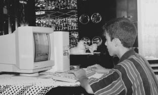
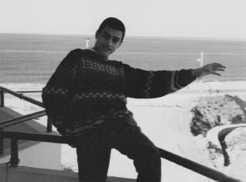

Artık kafamdaki bu düşünceler, ihtimaller, fikir yürütmelerde sonuca gelip bir an önce harekete geçmeliydim. Evet, bir bilgisayar almalıydım. Ama nasıl? Bunu başaracak maddi güce sahip değildim. Ailem alabilecek olsa bile buna bütçe ayırmaya yanaşmıyordu. Onlar için bilgisayar ile oyun konsolu arasında pek bir fark yok gibiydi. Beklenen gün gelecekse çekilen çile kutsaldır, diye düşünüp para biriktirmeye başladım. Harçlıklarımdan artırıp, bayramlarda aldığım paraları biriktirip dolara çeviriyor ve çekmecemde cam bir kavanozda saklıyordum. Benim için o para öyle kıymetliydi ki, kavanozdaki para arttıkça bilgisayara daha yakın olduğumu düşlüyordum.
Daha fazla ve hızlı para kazanmak için babama yaz tatilinde deri atölyesinde çalışmak istediğimi söyledim. Babam hem okulun değerini anlarım, hem de para kazanmanın güçlüğünü görürüm diye bunu kabul etti. Artık atölyede hamallık yaparak deri taşıyor, derileri istifliyor, ayak işlerini yapıyordum. Bazen metrelerce yükseklikteki koca bir fıçıya benzeyen, derilerin yumuşaması için atıldığı ahşap deri dolabının içine girip derileri boşaltıyordum. Aşırı derecede sıcak olan deri dolabından çıktığımda her yerime yapışan deri tozu ve parçacıklar yüzünden etrafta zenci kıvamında dolaşıyordum. Hem gocunmadan çalışıyor olmam, hem de bir amaç için, inanarak para biriktiriyor oluşumdan dolayı ailem memnundu. Enver amcam işçilerin maaşlarını dağıtırken hakkımı bana fazla fazla veriyordu. Ben de paramı hemen dolara çevirip cam kumbaramda biriktirmeye devam ediyordum.
O yaz Kadri, Enver, Remzi adlarındaki üç amcamdan, sanki bir arkadaşmış gibi anlaştığım en küçük olan astsubay amcam Remzi, İzmir’e izne gelmişti. İzmir Fuarı’nın açık olduğu döneme denk geldiği için iki aile fuarı gezmeye gitmiştik. İzmir Fuarı son yıllarda daha fazla bilgisayar firmasına ev sahipliği yapmaya başlamıştı. Daha çok firma stand kuruyor, bilgisayar veya çevre ürünleri satışı yapıyordu. O yıllarda henüz kredi kartı uygulaması olmadığından firmalar senet yöntemiyle taksitli satışlar düzenliyordu. Arkadaşmış gibi anlaştığımız amcam, çabalarım ve isyanlarımdan dolayı bir bilgisayarımın olmasını ne kadar çok istediğimi biliyordu. Ben tam heves, heyecan karışık hislerle bilgisayar standlarından birinden broşür alırken babama “Abi en azından bir pazarlık et. Çok istiyor bilgisayar. Bak para da biriktirmiş kendince” dedi.
Babam her ne kadar satın almaya yanaşmasa da mantıksız biri sayılmazdı. Hem benim çaba göstermem, hem de kardeşinin yönlendirmeleriyle o zamanlar İzmir’in en büyük bilgisayar firması olan Olbim’in sahibi Taner Bey’le sohbet etmeye başlamıştı bile. Amcamın yönlendirmeleri, benim ısrarım ve Taner Bey’in pazarlama yetenekleri birleşince altı taksitle bilgisayar sahibi olmuştuk. Elbette biriktirdiğim para bilgisayarın yarısını bile karşılamıyordu. Ama belki de bu konudaki ısrarım o gün bir bilgisayar sahibi olmama yol açmıştı. Yürüyordum fakat yere bastığımdan emin değildim. Sevinçten, coşkudan ne yapacağımı şaşırmıştım. Kafamda bu anı o kadar kurgulamama rağmen yine de azalmayan büyük bir coşku yaşamıştım. O kadar mutluydum ki çevremdeki her şeye sevgi duyar hale gelmiştim. Bundan dolayı büyük hayalimi gerçekleştirmeme yardımcı olan Remzi amcamın kalbimdeki yeri hep bir başka olmuştur.
Artık kendi bilgisayarımın sahibiydim. Ne deri atölyesine gidip gelmek vardı, ne de bir yerde gördüğüm bilgisayarı hayranlıkla izlemekle yetinecektim. Bu ufacık kutunun yaşamımı kökten değiştireceğinin henüz farkında bile değildim. Kendime ait bir bilgisayarım, sorulacak binlerce sorum ve okul saatleri dışında kullanabileceğim sınırlı vaktim vardı. İlkokul birinci ve ikinci sınıf dışında hiçbir zaman başarılı bir öğrenci olamamıştım. Bunun sebebi ilkokula başladığım semtten taşınmamız üzerine benim yeni okuluma uyum sağlayamamış olmamdı. Derslerden sürekli kopya çekerek geçiyordum. Okula gitmekle ilgili yüksek bir motivasyona sahip değildim. Hele ki bilgisayarım alındıktan sonra, sürekli akşam olsa da eve gidip bilgisayarla vakit geçirsem diye düşünüyordum.
Bilgisayarıma kavuştuktan sonra epey bir süre yap boz usulü geçti. Klasik bir kullanıcının uğraşmaması gereken ne varsa kurcalayarak sistemi sık sık çökertiyordum.

15 yaşında sahip olduğum ilk bilgisayarım.
Cyrix 486 DX2 66 işlemci, 4 MB hafıza, 420 MB sabit disk (1995).
Ben çökerttikten sonra bilgisayar taksidini ödeme vakti geldiğinde babam firmayı arayıp “Senedin ödemesini bizim evden alırsınız. Çocuk bilgisayarı bozmuş hem ona da bir el atarsınız” diyerek kurulum işini de aradan çıkarıyordu. Gelen bilgisayarcı ise benim için dünyanın en bilgili adamıydı. O bilgisayarıma Ms-Dos, Windows 3.1 kurarken ben yanında oturup tüm disketlerini kurcalıyordum. “Abi bu ne? Peki bu ne? Bu program ne işe yarıyor?” gibi sorular sorarak adamı bezdiriyor, ilginç programlar yükletiyordum. Benim için bilgisayarcı ağabeyin yüzündeki memnuniyetsiz ifadenin hiçbir önemi yoktu. O benim için bir bilgi kaynağıydı ve ben kısıtlı vakit içerisinde olabildiğince çok sorunun cevabını alarak beynimi bir sünger gibi çalıştırıyordum.
Lise yıllarım başlamak üzereydi. Sırf bilgisayarlara yakın olurum da okul daha çekilir bir hal alır diye Endüstri Meslek Lisesi’nin Bilgisayar bölümünü istiyordum fakat sınavları kaçırmıştım. Bilgisayara ilgim olduğundan ailem Ticaret Meslek Lisesi’ne yazdırmak istedi. Burası için de sınav gerekiyordu ama babam sınav konusunda benden ümitsiz olacak ki okula bir miktar bağışta bulunarak kayıt sorununu çözmeyi planlamıştı. Liseye kayıtla ilgili aklımda yer eden anı ise okula kayıt yaptırmaya giderken babam ile amcam arasında geçen diyalog oldu: Babam “Bu çocuktan bir bok olmaz!” dediğinde. Remzi amcamın cevabı “Öyle deme abi belli mi olur? Ummadık taş, baş yarar...” olmuştu. Komutan Remzi’nin yüzünü kara çıkartmamalıyım, diye aklımdan geçirdim...

Alanya (1997).
Atatürk Ticaret Meslek Lisesi’nde de ortaokulda olduğu gibi derslerim istikrarlı biçimde kötü gidiyordu. Başarılı olduğum tek ders bilgisayar ve kompozisyon dersleriydi. Bilgisayar dersinde çoğu zaman öğretmenin hatalı anlattığı yerleri yakalayıp onu utandırmaktan zevk alıyordum. Kompozisyon dersinde ise masa üstündeki vazo hakkında bile birkaç sayfa karalayabilecek haldeydim. Bilgisayar öğretmenim yenilgiyi kabul ettikten sonra bazı zamanlar dersleri bana anlattırmaya başladı. Topluluk karşısında konuşma alışkanlığını ilk defa o yıllarda edinmeye başladım.
Yıllar sonra aynı okula Hacker Tamer Şahin olarak gitmek ise benim için farklı bir deneyim olmuştu. Derslerde sürekli örnek gösterildiğimi duyuyordum fakat okulda konuşma yaparken onca öğrencinin çıt çıkarmadan beni dinlemesi ayrıca hoşuma gitmişti. Kim bilir, belki de anladılar. Ben de onlardan biriydim. Onların yaşlarındayken dersleri zayıf, iyi kötü bir konuya tutulmuş, haylazlık ve haşarılık peşinde bir çocuktum. Konuşmam sırasında aramızda böyle adı konulmamış bir bağ oluşmuştu.